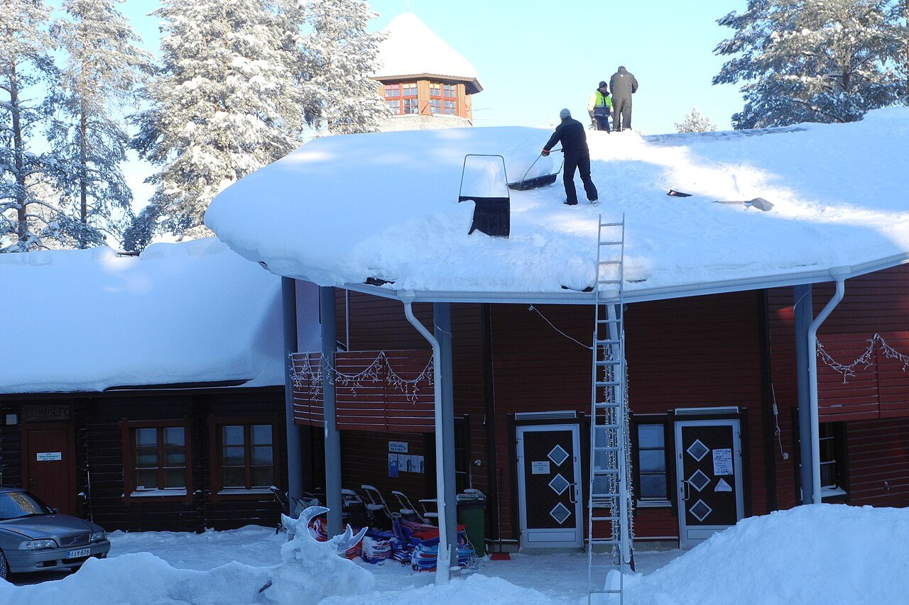
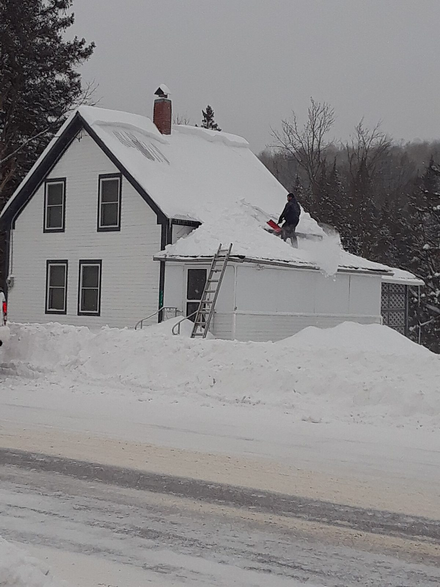
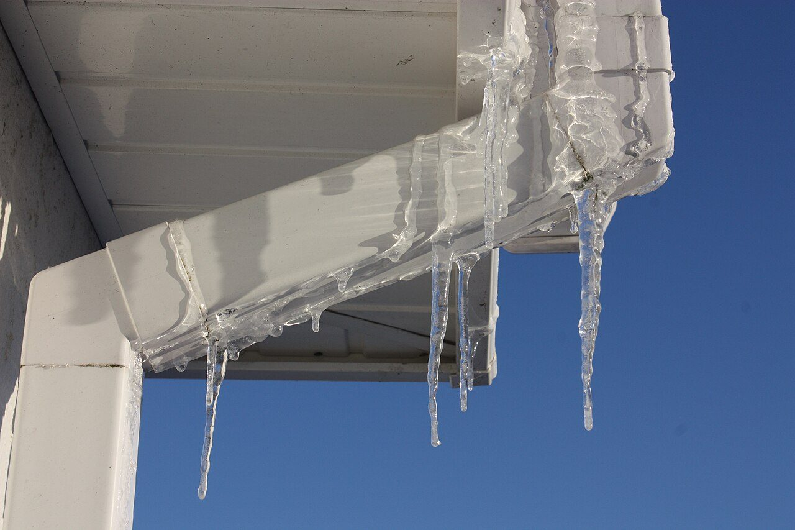
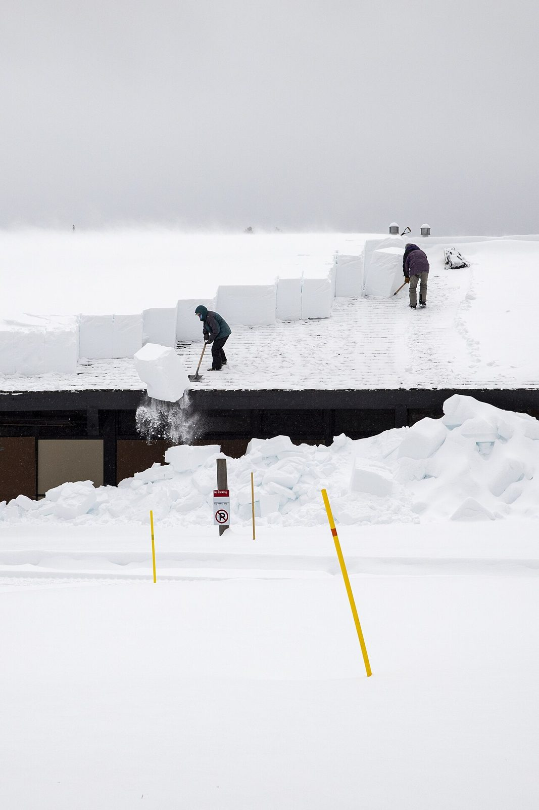
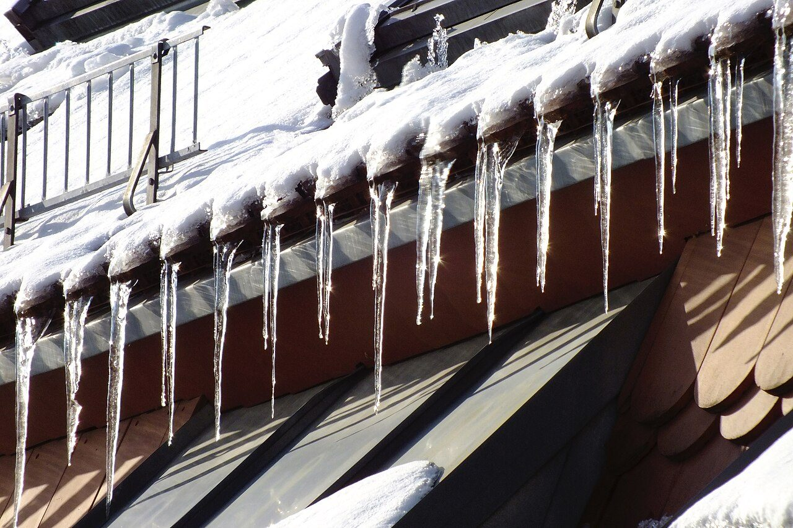
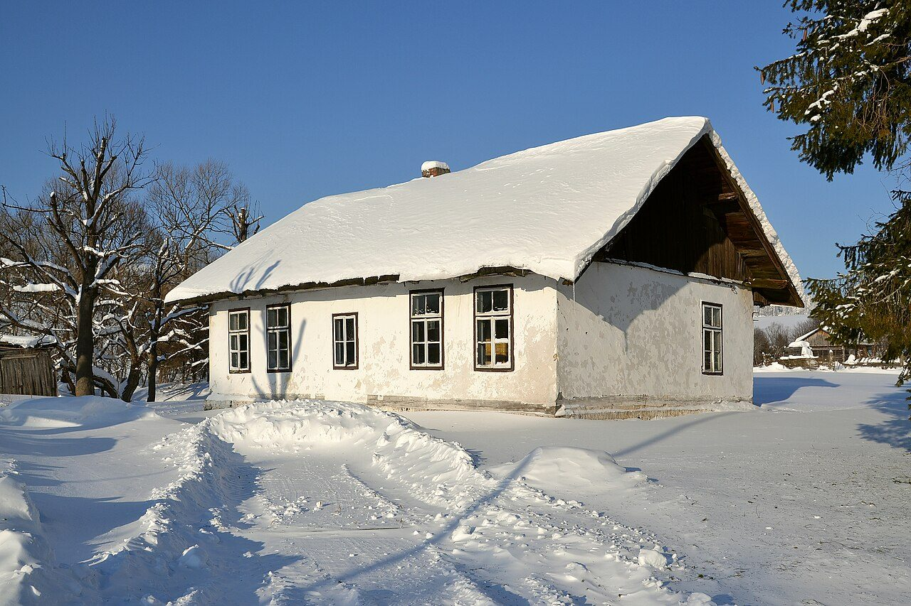

À Drummondville et aux alentours : déneigement et déglaçage de toitures l'hiver — service 24/7 — et travaux de toiture le reste de l'année, par un couvreur d'expérience.
Nos services
L'hiver, on monte sur les toits pour déneiger et déglacer. Le reste de l'année, on les répare et on les refait — bardeaux et étanchéité — à Drummondville et aux alentours.
Déneigement de toits en pente et de toits plats. On laisse une mince couche de neige protectrice sur les bardeaux et on dégage complètement les abords de la maison.
Retrait sécuritaire de la glace accumulée en bordure de toit, là où les infiltrations commencent. On traite le barrage de glace avant que l'eau entre dans la maison.
Travaux de toiture et pose de bardeaux, notamment les produits Soprema : le service d'un couvreur, pour un toit réparé ou refait dans les règles.
Urgence de toit, jour ou nuit : le service 24/7 couvre les accumulations critiques comme les problèmes de toiture urgents.
Travaux d'étanchéité de fondation : garder l'eau là où elle doit être — dehors.
Basés au 194, rue des Amarres à Drummondville, on dessert la ville et les municipalités des alentours.
Comment ça marche
Une photo de votre toit aide, mais un appel suffit : décrivez le toit et l'accumulation. On vous donne un prix ferme avant de se déplacer — pas d'estimation qui gonfle une fois sur place.
On confirme le prix et l'heure d'intervention. Notre équipe arrive avec harnais, échelles et protections pour vos gouttières, vos soffites et votre aménagement au sol.
On dégage la neige et la glace visées, on libère les sorties et les trottoirs au sol, et on vous envoie les photos avant/après. Vous, vous ne montez jamais sur le toit.
Forfaits hiver 2026-2027
Chaque toit est différent : ces prix donnent l'ordre de grandeur pour un toit standard. Le prix exact est confirmé au téléphone ou sur photos — et il ne change pas une fois l'équipe sur place.
Prix d'exemple pour un toit résidentiel standard d'un étage, taxes en sus. Prix ferme confirmé avant l'intervention — aucun frais ajouté sur place.
Zones desservies
On dessert Drummondville et les alentours. Après une grosse tempête, les appels de notre secteur sont traités en priorité.






Témoignages
« Les portes de la maison commençaient à coincer tellement il y avait de neige sur le toit. Ils sont venus le lendemain de mon appel, prix respecté au dollar près, photos à l'appui. »
Martin L. — propriétaire, Drummondville (témoignage de démonstration)« Un barrage de glace faisait couler l'eau dans le mur du salon. Déglaçage fait en une visite, et leurs conseils ont réglé le problème pour les hivers suivants. »
Sophie D. — cliente résidentielle, Drummondville (témoignage de démonstration)« Pour notre toit plat commercial, ils passent dès que l'accumulation devient sérieuse. Service carré, hiver après hiver — et l'été, on les rappelle pour la toiture. »
Karine B. — gestionnaire d'immeuble, Drummondville (témoignage de démonstration)Questions fréquentes
Quand l'accumulation devient importante, que des portes ou des fenêtres commencent à coincer, que vous entendez des craquements ou que de gros glaçons se forment en bordure. En cas de doute, envoyez-nous une photo : on vous dit franchement si ça peut attendre.
Non. On travaille avec des pelles de toit et des outils adaptés, jamais de métal directement sur les bardeaux, et on laisse une mince couche de neige protectrice en place. Vos gouttières et vos soffites sont protégés pendant l'intervention.
Monter sur un toit glacé sans équipement, c'est le risque qu'on prend à votre place : harnais et ancrages, outils adaptés qui ne blessent pas les bardeaux, et dégagement des sorties au sol avant de commencer.
Oui. Après chaque tempête importante, notre ligne d'urgence priorise les toits à risque : accumulation critique, signes de surcharge, glace qui menace de tomber. Le délai visé est de 24 heures dans notre secteur.
On retire la glace accumulée en bordure du toit par sections, sans frapper les bardeaux, et on dégage les gouttières pour que l'eau de fonte s'écoule. On vous explique aussi les causes — souvent la ventilation et l'isolation du grenier — pour réduire le risque l'hiver suivant.
Soumission gratuite
Décrivez votre toit et l'accumulation — une photo aide toujours. On vous confirme un prix ferme avant de déployer l'équipe, et après une tempête, les demandes de notre secteur passent en priorité.